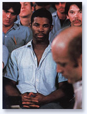

Lorin Hollander
writes:
“The devastating
crises of our time are planetary and unprecedented, and
there is growing consensus that nothing short of a global
transformation in the very nature of human consciousness
has the power to bring forth a re-genesis of civilization.
The new, visionary civilization must arise out of masses
of people tapping some basic human core of resonance with
the underlying potentials in nature, but in a way in which
they maintain open access to it. Such abilities would be
at once visionary – to see the way only the prophetic
few have seen; creative – to ignite genuine innovation;
spiritual – to embody deeply humane awakenings; and
in tune with all life.”
In his lectures, symposia, consulting, fundraising,
personal interactions with people and in his music, Lorin
Hollander creates nodes of a visionary civilization - settings
in which people can think, experience and synergistically
create a human culture on the other side of this planetary
crisis. As Hollander speaks and performs, each transient
gathering grasps what the human challenge of our time truly
is, identifies the barriers and obstacles to facing the
challenge and envisions the strategic actions they must
take to create a new world.
An access to creative innovation,
transformation and possibility
|
Lorin Hollander serves as advisor
and consultant with:
- Corporate Leaders
- University Presidents, Deans
and Faculty
- State and Federal Legislatures
- Boards of Education
- International, National
& Community Arts Organizations
- Symphony Orchestra Outreach
Development
- Institutes of Consciousness
Research
- Music and Art Festivals
|
“Your visit to Arizona
was the most exciting event in arts education
in the past decade. The effect which you had on
the Arizona Legislature, the State Board of Education,
the Arizona Board of Regents (and 10 other decision-making
agencies), has opened up a new dialogue for Arizona
arts advocacy. We are grateful for your effective
presentations with all of these groups. The Arizona
Alliance for Arts Education is working on plans
to make your presentations count for the future
of Arizona Arts Education. We have a new vitality
which will be most effective as we work for an
improved arts education climate in our state.”
- Raymond G. Van
Diest, Fine
Arts Specialist, Arizona Department of Education |
|
Hollander is sought out internationally by
institutions and organizations seeking to create new possibilities,
visions and missions. He works with groups of various sizes
to re-conceptualize and recreate themselves as vehicles
for sustainable modalities of progress and growth in business,
government and education. Hollander also consults on new
paradigms and sources of funding. Where he is brought on
board to consult and advise, Lorin Hollander empowers leaders
to discover how the visionary in every person can be fostered,
implemented and nurtured.
Young People At-Risk
There are statistics on children and youth
between the ages of five and seventeen which do not reach
the nightly news, but should. Like proverbial canaries in
coal mines, our children are telling us that much is terribly
wrong. In the United States alone:
- Every 5 hours a child commits
suicide
- Every 15 minutes a baby
dies
- Every 1 minute a baby is
born to a teen
- Every 4 minutes a child
is arrested for a drug or alcohol related offense
|
- Every 9 seconds a child
drops out of school
- Every 4 hours a child dies
from abuse or neglect
- Every 8 minutes a child
is arrested for a violent crime
- Every 1 minute a baby is
born to a teen mother
|

Lorin performing for
death row prisoners
|
Underlying Dynamics
These dysfunctions are caused
by an attempt to fill, deaden or avoid, in inappropriate
ways, a core human experience known in psychology
as trauma and in the great spiritual traditions as
emptiness, vulnerability, primal wound, shame. We
are rarely taught that we, as humans, are born with
this primal wound and that the only way our undifferentiated
yearning or “thirst for wholeness” can
be satisfied is through a creative experience, often
in music and the arts, where we surrender our cravings
and attachments and “reach for the divine.” |
Music, Creative Vision
and the Transformation of Education
Music, perhaps most powerfully,
enhances the organically interwoven dimensions of creativity,
vision and intuition, as it fulfills this undifferentiated
yearning and reflects the very core of our beings. Imbued
with the awesome glory of human emotion, music is supreme
in bringing healing light into our primal void and has the
power to significantly curtail and prevent the addictions,
suicides and violent dysfunctions suffered by our children.
Too often however, we fail
to nurture in our communities, schools and universities
the creativity and humanity of young people. The critical
importance of music in education is its power to awaken
and inspire our children’s creative vision and compassion.
In the great music of the world, they can hear, know and
experience what is possible for humanity.
It is time for humanity to
recognize visionary creativity as a birthright and to foster
lifelong visionary education. The challenge is to re-imagine
the very nature of education, to inspire creative prophets,
poets and visionaries, awakening talents to inspire and
transform. Music written of divine contemplation and compassionate
solace when deeply appreciated becomes a means for teaching
and learning, for liberating people of all ages to open
their hearts and imagine a better life for themselves and
this planet.
"Lorin Hollander’s vision
for music, healing and transformational education and
his efforts toward this goal have already brought together
organizations such as the New England Conservatory and
the University of Southern California in positive steps
toward realizing the power of music to reshape the very
fabric of our society. Lorin has the unique skills to
drive this initiative. He possesses outstanding musicianship,
a national reputation, and a fundamental grasp of music’s
essential role in education and wellness. It is rare
to find such an articulate spokesman and leader with
such a depth of understanding of the fundamental issues.
I am sure that the goals he articulates can be achieved
if we make Lorin’s expertise, excitement and vision
available to students and musical communities."
- Dr. Robert Cutietta,
Dean, University
of Southern California Thornton School of Music |